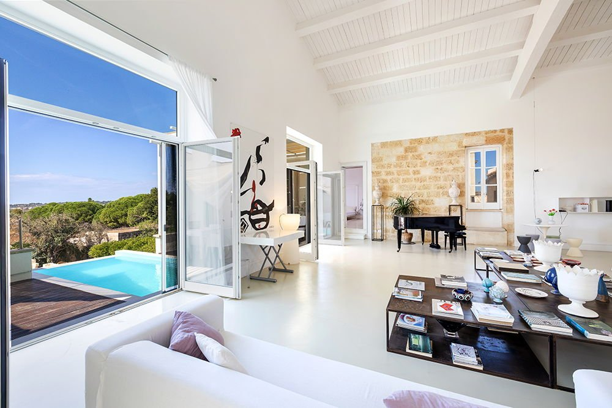

€1.200.000
Gagliano del Capo village, near the Ciolo bridge and the Adriatic cliffs of southern Salento, Puglia
Open the listingOld and new done properly at the tip of Salento: an 18th-century tobacco factory in pale local stone with star-vaulted rooms, tuff fireplaces and flagstone floors, plus a 100 m² white living room under a 12 m beamed ceiling that opens onto a built terrace pool. Minimalist micro-resin upstairs, arches and a stone courtyard below. Habitable now.
Opened 6 Oct 2026 on Engel & Völkers Salento-Lecce expose; asking €1.200.000 (at cap); ref W-04BWD4; uuid 4968f9ab-af00-58a2-bf9c-b97247ab835b; 6 beds / 6 baths; 631 m² total; 250 m² plot (town house with courtyard garden); construction year 1850 (described as 18th century); condition.veryGood; fireplace, A/C, terrace, cellar. Ground floor has two separate units (good for guests or letting). Garden still being finished; restored 7x3 m cistern. bargain:false (at cap).